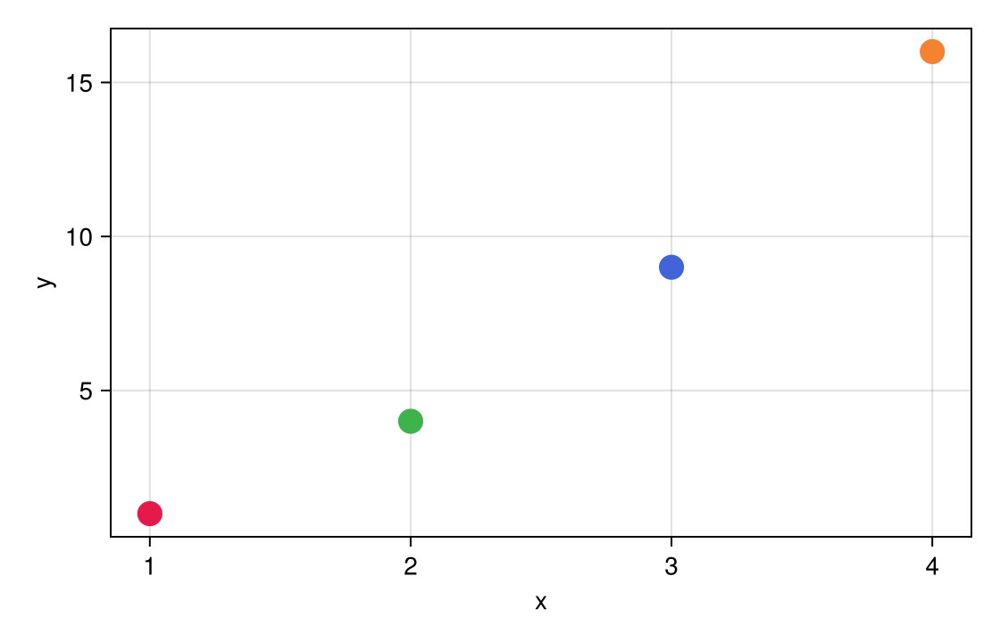
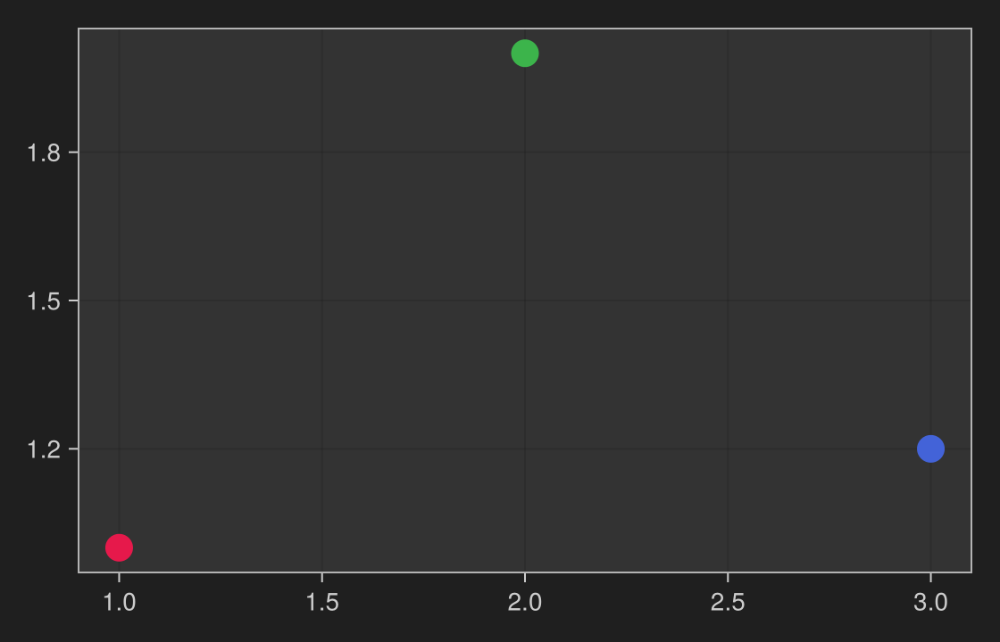

Tooltips
Hover over a mark and a tooltip appears above it with the mark's data. For each interactable, you choose the default table, your own template, or no tooltip.
In this notebook, each city's tooltip uses a template: the name in bold, the population with thousands separators, and a border in the marker's color.
Notebook as text
Hover over a city to see its name and population. Click one and the last cell names it.
Scatter the cities the way you normally would. The tooltip template shows each point's city and pop, and the tooltip's border uses the marker's color.
begin
cities = [
(city = "Tokyo", pop = 37_400_000, x = 1.0, y = 1.0),
(city = "Delhi", pop = 32_900_000, x = 2.0, y = 4.0),
(city = "Shanghai", pop = 28_500_000, x = 3.0, y = 9.0),
(city = "São Paulo", pop = 22_400_000, x = 4.0, y = 16.0),
]
palette = ["#e6194b", "#3cb44b", "#4363d8", "#f58231"]
fig = Figure(size = (560, 360))
ax = Axis(fig[1, 1]; xlabel = "x", ylabel = "y")
s = scatter!(ax, [1.0, 2.0, 3.0, 4.0], [1.0, 4.0, 9.0, 16.0]; color = palette, markersize = 20)
tips = interactables(
s;
payloads = cities,
tooltip = masque"<b>$(city)</b><br>pop $(pop:,)",
)
nothing
end@bind pick saves a click in pick, while hovering only shows the tooltip and leaves pick as it was.
@bind pick masque(fig, tips)
pick starts as nothing, and this cell responds when you click a city.
if isnothing(pick)
"hover a city, or click one"
else
"$(pick.city) selected"
endhover a city, or click oneThe default tooltip
Without tooltip, the tooltip is a small table of the payload's fields: your own fields when you pass payloads, and for a scatter without them, the point's index, x, and y. On a categorical or date axis, x and y in the tooltip and in pick are text: the category's label, such as "b", or the date or time you plotted, such as "2024-01-02", "2024-01-01T01:00:00", or "01:00:00".
Hovering a line from lines!, stairs!, series!, or scatterlines! adds x and y of the point you plotted nearest the pointer along the line. In a template you can also use i, that point's position in the line's data, so $(i) is 3 over xs[3], ys[3]. A click still picks the whole line. A line on an Axis3 shows only its payload.
Numbers show up to four significant figures, so 0.30000000000000004 reads 0.3 and 2.71828 reads 2.718. Whole numbers show in full. To show more or fewer figures, pass tooltip_sigdigits to masque:
@bind pick masque(fig; tooltip_sigdigits = 6)The value in pick keeps every digit; only the tooltip is rounded.
Two interactables work differently. A legend entry shows no tooltip by default, because its label is already next to the swatch. To add one, pass a template, as Legend shows. A SliceInteractable shows the series values at the pointer instead of a payload.
Write a template
A template is a masque"..." string. Each $(field) is replaced by that field's value for the mark under the pointer:
interactables(s;
payloads = cities,
tooltip = masque"<b>$(city)</b><br>pop $(pop:,)",
)| In the template | Becomes |
|---|---|
$(field) | the payload's field, a number rounded as in the default tooltip |
$(field:spec) | the same, formatted with a d3-format spec: :, adds thousands separators, :.2f gives two decimals, :.1% a percentage |
\$ | a literal dollar sign |
| anything else | copied into the tooltip as HTML, so <b> and <br> work |
A $(field) can only name a payload field, not an expression such as $(pop / area), so to show a computed value, put it in the payload:
cities = [
(city = "Lyon", density = round(522_250 / 47.9)),
(city = "Nice", density = round(342_669 / 71.9)),
]To turn tooltips off, pass tooltip = false. The hover highlight and clicks keep working.
Template errors
A template Masque cannot read, such as one with an expression like $(pop + 1), an unclosed $(, or a format spec d3 does not know, raises a TemplateValidationError when its cell runs.
A template that names a field the payload does not have raises an ArgumentError when masque runs, and the message lists the payload's fields and suggests the closest match. This check needs named-tuple payloads: with a DataFrame or Dict, a misspelled field shows up as a blank in the tooltip, so hover once after you write the template.
HTML in payload values
Avoid putting HTML in your payload values, because the tooltip shows the tags as plain text instead of rendering them. To make something bold, use the template instead:
# The tooltip shows "<b>Lyon</b>", tags and all
cities = [(city = "<b>Lyon</b>", pop = 522_250)]
# The tooltip shows "Lyon" in bold
cities = [(city = "Lyon", pop = 522_250)]
tooltip = masque"<b>$(city)</b>"Also avoid links built from your data, such as <a href="$(url)">, unless you trust every URL in it: the link goes wherever the data says.
Where the tooltip appears
The tooltip sits above the hovered mark, and moves below it or inward near the figure's edges. Axis readouts, boxes, and other interactions without a single mark show their tooltip at the pointer.
Dark figures
A dark figure gets a dark tooltip, even on a light page, because the tooltip follows the figure's background rather than the browser or system setting:
fig = Figure(size = (560, 360); backgroundcolor = :gray12)Notebook as text
Hover over a point, and the tooltip is dark because the figure is. Click a point, and the last cell names it.
Create the scatter on a dark figure, and pass the scatter to interactables. The tooltip takes its theme from the figure's background and its border color from the marker.
begin
points = [
(label = "alpha", x = 1.0, y = 1.0),
(label = "beta", x = 2.0, y = 2.0),
(label = "gamma", x = 3.0, y = 1.2),
]
fig = Figure(size = (560, 360); backgroundcolor = :gray12)
ax = Axis(
fig[1, 1];
backgroundcolor = :gray20,
xtickcolor = :gray80,
ytickcolor = :gray80,
xticklabelcolor = :gray80,
yticklabelcolor = :gray80,
xlabelcolor = :gray80,
ylabelcolor = :gray80,
bottomspinecolor = :gray70,
leftspinecolor = :gray70,
rightspinecolor = :gray70,
topspinecolor = :gray70,
)
s = scatter!(
ax, [p.x for p in points], [p.y for p in points];
color = ["#e6194b", "#3cb44b", "#4363d8"],
markersize = 22,
)
pts = interactables(s; payloads = points)
nothing
end@bind pick saves a click in pick, while hovering only shows the tooltip and leaves pick as it was.
@bind pick masque(fig, pts)
pick starts as nothing, and this cell responds when you click a point. After a click, pick.label is the point's name.
if isnothing(pick)
"hover a point, or click one"
else
"$(pick.label) selected"
endhover a point, or click oneAccent color
When Masque knows a mark's color, its tooltip gets a 3px border in that color. The color comes from:
scatter!'scolor=, for the layermasquebuilds for a scatter, as in both examples on this page, or when you pass theScatteritself toPointInteractable- the
colors=keyword, when you pass positions instead of the plot - a legend entry's swatch
Without a known color, the border is a plain 1px line.
To change the tooltip's background, text color, font, or corner radius for a whole widget, pass the tooltip_* keywords to masque, or set the --masque-tip-* CSS properties on the page. See Tooltip styling. To change the color and width of highlights and the selection, pass overlaystyle; see Overlay styling.